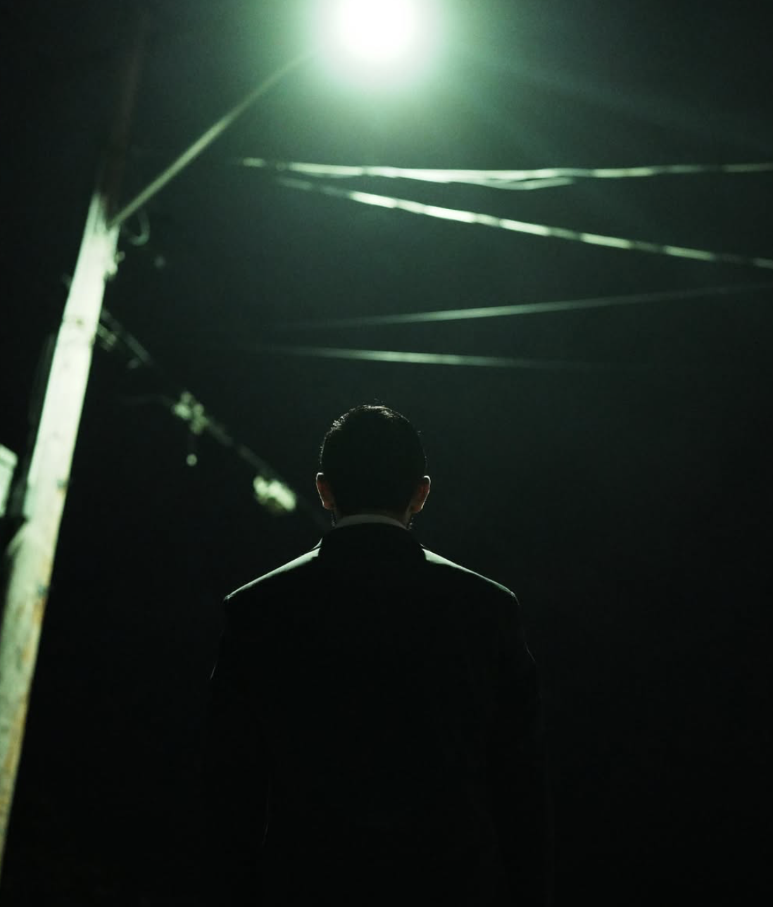
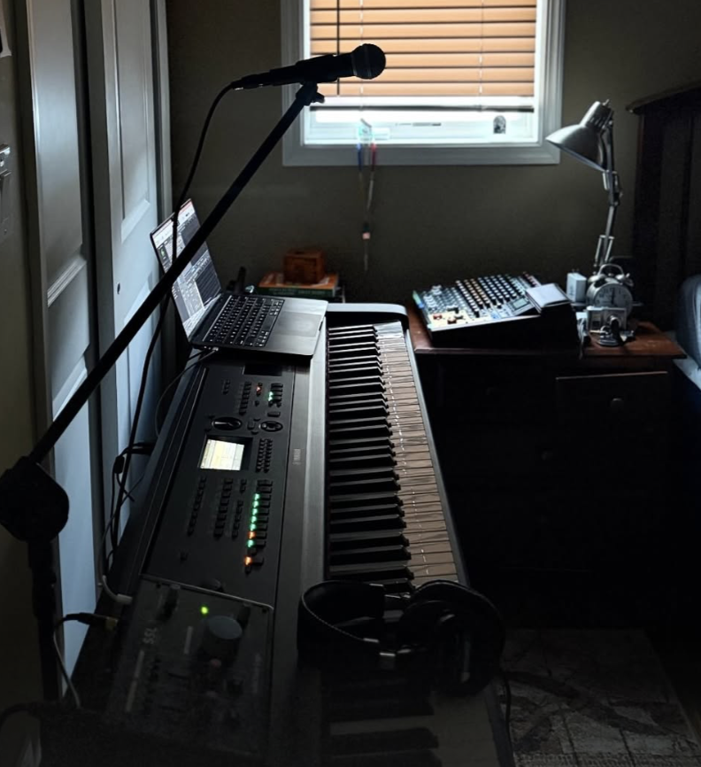

It Takes a Village
Today’s post is likely going to exclusively talk about my newest music, and the awesome people who are helping make it happen.
Today’s post is likely going to exclusively talk about my newest music, and the awesome people who are helping make it happen. You guys are those people, so keep reading for a huge thank you from me :)
Hello once more, dearest readers O’mine...
It’s Tuesday? AGAIN AGAIN?
Yeah, I think I’m liking Tuesdays for posts. We’re going to try this for a bit. Fuck it, it’s BLOG POST TUESDAY, BABY! WOOOOOOO!!!11!1!!1!!!1!!
Now, without further ado:
It’s Time.

This Thursday the 21st of May (haha, 5/21, I see what you did there, Luca) brings you my first major release in almost 5 years: “The Kiss and Tell Show!” It will be a 7 song mini-album leading to a larger part-2 later this summer (that one’ll be full album length). Here is the final tracklist:
- Sorry To You (Written 2023)
- What's Going On? (Written 2024)
- Pretend (Written 2025)
- Alone Again (Written 2022)
- Kiss & Tell (Written 2026)
- Sorry To You (Voice Memo)
- Pretend (First Draft)
“When the magic was gone, when the music had faded, and things that you saw turned to things that you didn’t see as well, did they kiss and tell?”
I do truly consider these songs some of my best in songwriting. This first installment is a glimpse into the past four years of my life and is kinda a massive deal to me. I’ll talk more about what the songs mean to me after they’re actually out and about in the world, but until then take my word for the fact that these songs are VERY personal. These are feelings I journal about, these are the moments I keep to myself and myself only. I hope listening to these songs evokes something in you.
Also, that first draft of pretend is a fun one. That’s me writing the song in real time!!!! Like mic at guitar mic at mouth GO from my notes app it was really cool. Now you get to see the song as it took shape!
What is the feeling?

“The Kiss and Tell Show” attempts to capture a feeling you only find alone in your room after a long day.
The show is over. Push the paparazzi away. Dodge their questions. Turn your ringer off, flip your phone over, throw your blanket over your head and scream into your pillow.
The show is over. Make a cup of tea that keeps you warm, if nothing else. Maybe it’ll soothe your throat from all that screaming you just did. Jesus those stage lights are bright.
The show is over. That caffeine is gonna keep me up, isn’t it? I’m still in my suit. How did I ever get this far? I’ll do it again, I always do.
The show is over. For now.
Production

This mini-album, alongside my other recent work, marks a drastic shift in my creative endeavors where I stop trying to perfect things. I just make them exist now. The little creaks in the room that the mic caught? They’re in there. The weird thing my voice did? It’s in there.
I’m tired of chasing perfection, because to me perfection is something that you find within imperfection. It’s actually so beautiful when you start to realize that it works that way, I’m coming to find. The question isn’t “what is the most perfect,” but “what do I want?” and bam. You find ‘perfection.’
That is a philosophy that I’m carrying outside of my music also, and I’m finding that sometimes what I want ISN’T the most perfect. The concept of the most perfect kept me from releasing major music for five years. My last multi-song release was my CHRISTMAS album in 2021. And guess what? That was recorded in my dorm with like the dumbest setup ever. I still love my This December cover. Point proven.
Amazing people
Let’s acknowledge the hands-on creative team of people I work with. Thank you to:
My best friend Yash: Dude holy shit. You have given your ear to so much of my bs while I’ve made this happen, and half of your advice has been “do you like it.” like yes, now I do. You gave me that confidence. Holy audio engineer you rock man.
My best friend Eddie: This guy takes a camera and turns it into the work of God. I don’t understand how you do the things you do, your talent is unfuckingreal. Thank you for helping me shoot some of the best photos I’ve ever had the pleasure of taking with you. There are not enough asian moon dinners to thank you. if you need photos this is your guy.
My best friend Colin: Give this man a mac, and he comes back a father with insane visuals. Colin helped me put together the visuals you’re going to see as this mini-album and its part 2 come to life, and they are stunning. We were watching Radiohead music videos last night and talking about how artists kinda need to be free to just let weird and beautiful things flow through them. That’s art. That’s what this guy does. Major major props. So much cool stuff ahead because of this guy. here is some of colin’s solo work, and here is his film company, CTRL+B (their website WIP by yours truly!)
My sister Eva: Holy creative vision. Eva usually works with me on my album covers, but in my recent tendency to go rouge she’s given endless input. She’s let me bother her to listen to my songs like a million times. Thanks, sis. You rock :)
Finally, and most importantly
You guys.
My friends, cousins, lover, parents, anybody who lets me bother them to show them my goofy little songs and listens to them. People who share my stuff, even add it to one of their playlists. It’s insane to me that like those are things that can happen.
When this mini-album comes out, it would mean the absolute universe if you listened to it and let me know what you think. Show a friend if you’re compelled. I’d love to know what resonates with y’all, it’s half the pleasure of doing this publicly!
Talk soon!
That’s all for now. Check out the Kiss and Tell Show when it’s live on Thursday, May 21st, 2026. I appreciate you all so much :)
~Luca